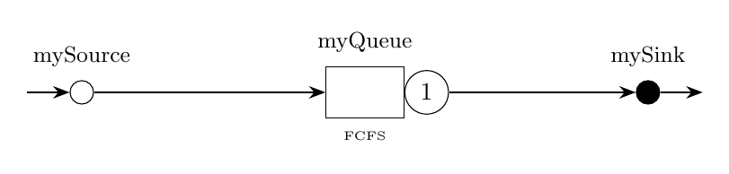

Tutorial 9: Departure Process Analysis
This example illustrates LINE's support for extracting simulation data about particular events, such as departures from a queue. We compute the squared coefficient of variation of inter-departure times and compare with Marshall's exact formula.

% Example 9: Studying a departure process
[model,source,queue,sink,oclass] = gallery_merl1;
%% Block 4: solution
solver = CTMC(model,'cutoff',150,'seed',23000);
sa = solver.sampleSysAggr(5e3);
ind = model.getNodeIndex(queue);
filtEvent = cellfun(@(c) c.node == ind && ...
(isequal(c.event, EventType.DEP) || (isnumeric(c.event) && c.event == 2)), sa.event);
interDepTimes = diff(cellfun(@(c) c.t, {sa.event{filtEvent}}));
% Estimated squared coeff. of variation of departures
SCVdEst = var(interDepTimes)/mean(interDepTimes)^2
util = solver.getAvgUtil();
util = util(queue);
avgWaitTime = solver.getAvgWaitT();
avgWaitTime = avgWaitTime(queue);
SCVa = source.getArrivalProcess(oclass).getSCV();
svcRate = queue.getServiceProcess(oclass).getRate();
SCVs = queue.getServiceProcess(oclass).getSCV();
% Marshall's exact formula
SCVd = SCVa + 2*util^2*SCVs - 2*util*(1-util)*svcRate*avgWaitTime
fprintf('Simulated SCV: %.6f\n', SCVdEst);
fprintf('Theoretical SCV: %.6f\n', SCVd);// Example 9: Studying a departure process
val (model, source, queue, sink, oclass) = galleryMerl1()
// Block 4: solution
val solver = CTMC(model, "cutoff", 150)
val sa = solver.sampleSysAggr(5000)
val ind = model.getNodeIndex(queue)
// Filter departure events and compute inter-departure times
val depTimes = sa.event.filter { it.node == ind && it.event == EventType.DEP }
.map { it.t }
val interDepTimes = depTimes.zipWithNext { a, b -> b - a }
// Compute estimated SCV
val mean = interDepTimes.average()
val variance = interDepTimes.map { (it - mean).pow(2) }.average()
val scvdEst = variance / mean.pow(2)
// Marshall's exact formula
val util = solver.avgUtil[queue][0]
val scva = source.getArrivalProcess(oclass).scv
val svcRate = queue.getServiceProcess(oclass).rate
val scvs = queue.getServiceProcess(oclass).scv
val avgWaitTime = solver.avgWaitT[ind]
val scvd = scva + 2*util*util*scvs - 2*util*(1-util)*svcRate*avgWaitTime
println("Simulated SCV: $scvdEst, Theoretical SCV: $scvd")from line_solver import *
import numpy as np
model, source, queue, sink, oclass = gallery_merl1()
# Block 4: solution
solver = CTMC(model, cutoff=150, seed=23000)
sa = solver.sample_sys_aggr(5000)
ind = model.get_node_index(queue)
# Filter departure events
dep_times = []
for event in sa.event:
if event.node == ind and event.event == "DEP":
dep_times.append(event.t)
if len(dep_times) > 1:
inter_dep_times = np.diff(dep_times)
# Estimated SCV of departures
scv_d_est = np.var(inter_dep_times) / np.mean(inter_dep_times)**2
print(f"Simulated SCV of departures: {scv_d_est:.6f}")Expected Output
=== Departure Process Analysis Results === Simulated SCV of departures: 0.899211 Theoretical SCV (Marshall): 0.875000 Relative error: 2.77%